Waste Drawer Coalescing Trap Upgrade
Purpose
This procedure provides instructions on how to replace the existing filter and coalescing trap (if present).
What is Affected
Vacuum and waste drawer, existing  filter (T8 or Odorcarb) and coalescing trap (T8 Configuration).
filter (T8 or Odorcarb) and coalescing trap (T8 Configuration).
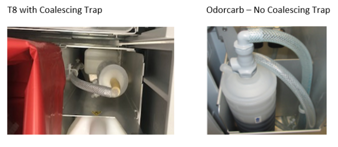
Parts and Materials Required
- Proper Protective Equipment
- FSE Toolkit
- FILTER (BLEACH), ODORCARB, 0.2UM CARTRIDGE
- WASTE DWR, COALESCING TRAP, GAC, UPGRADE KIT
Time Required
- 60 Minutes
Procedure
-
Shut down the Panther GUI, Panther System, and PC. Turn off the main power.
-
Open the waste drawer and properly dispose of the solid waste bag and waste cover.
-
Remove the waste bottle and the front cover of the Waste Drawer.
-
If upgrading a T8 with Coalescing Trap configuration:
-
Refer to Odorcarb Vacuum Filter Upgrade Procedure Steps 1-4 to
 remove the T8 filter and Steps 7-8 to remove the coalescing trap.
remove the T8 filter and Steps 7-8 to remove the coalescing trap.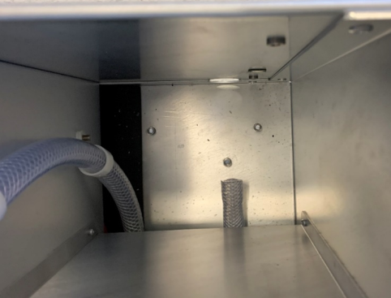
-
Continue to Step 6.
-
-
If upgrading a GAC filter configuration:
-
Remove the current GAC filter from the quick connect fittings (top and bottom of filter) and discard.
-
Remove the
elbow fitting and extension tube that was connected to the bottom of the filter.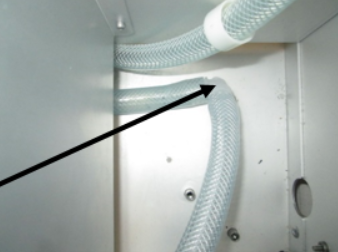
-
Remove the
quick connect fitting from the vacuum tube. If the tubing requires cutting to remove the fitting, cut as close to the fitting as possible.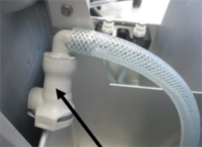
-
-
Use an 8mm wrench or socket to remove the
two nuts and tubing clamps that secure the tubing to the side wall. Loosely reinstall the nuts on the posts and discard the tubing clamps.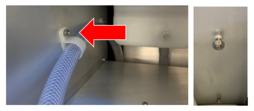
-
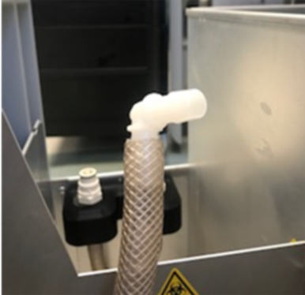
-

Note—Verify all tubing is NOT kinked or pinched. 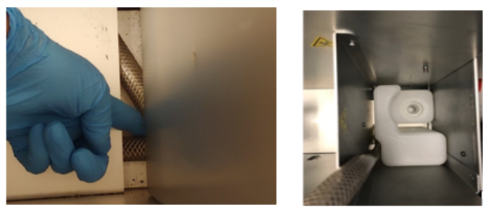
-
Install the two screws from the kit into the front and rear mounting holes under the drawer in the original location where the coalescing trap was installed.
-
Install the
trap holder onto the posts and tighten the nuts.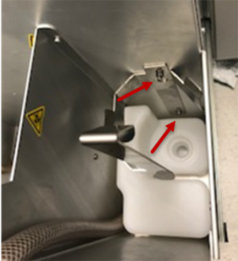
-
Grease the
O-rings on both ends of the filter and install the filter.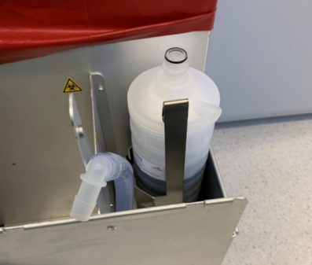
-
Install the
quick connect fitting onto the tubing that has been provided in the kit.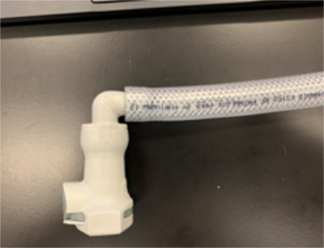
-
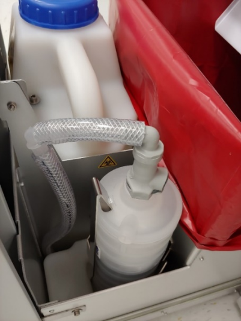
-
Reinstall the Waste Drawer front cover, Waste Bottle, and waste bag with the cover.
Verification
-
Verify the Waste Drawer opens and closes smoothly.
-
Use Service Software to monitor the Panther Vacuum pressure. After 5 to 10 minutes the Panther Vacuum pressure should settle into a range of 6 and 8 in Hg (-203 and -271 mbar).
-
Verify the system successfully passes Prime
Operation of pumping fluid through tubing to ensure proper and consistent fluid delivery (remove air from the tubing, etc.)..
 button at the top of the page to send feedback, comments, or change requests.
button at the top of the page to send feedback, comments, or change requests.